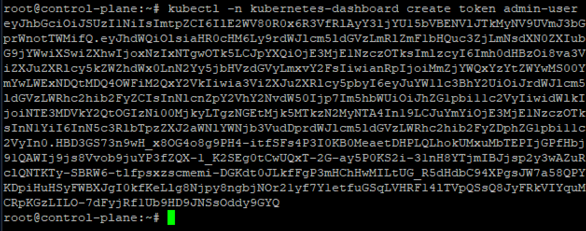

Schéma d'Architecture
+----------------------------------+
| Nœud Control Plane |
|----------------------------------|
| addr 192.168.100.1 |
| |
| |
| |
+----------------------------------+
|
|
+----------+----------+
| |
| |
v v
+----------------+ +----------------+
| Nœud Worker 1 | | Nœud Worker 2 |
|----------------| |----------------|
| addr | | addr |
|192.168.100.05 | |192.168.100.110 |
| | | |
+----------------+ +----------------+
Assurez-vous que les fichiers /etc/hosts sont égaux sur les trois machines :
192.168.100.1 control-plane 192.168.100.105 node-worker1 192.168.100.110 node-worker2
Prérequis
Système d'exploitation : Debian / CentOS
Ressources recommandées : 2 CPU, 4 Go de RAM (par nœud)
Sur le control-plane et workers
Mettre à jour et installer les dépendances nécessaires
apt -y update
apt -y install containerd iptables apt-transport-https gnupg2 curl sudo gpg
Containerd est un runtime de conteneurs utilisé pour gérer le cycle de vie complet d'un conteneur, de son téléchargement à son exécution et à sa terminaison. Il est devenu le runtime de conteneurs par défaut pour Kubernetes depuis que Docker a été déprécié. Les commandes suivantes permettent de configurer Containerd afin qu'il utilise systemd comme gestionnaire de groupes de contrôle (cgroups), ce qui est recommandé pour une meilleure intégration avec Kubernetes.
Creation du fichier de configuration
mkdir -p /etc/containerd
Générer le fichier de configuration par défaut de Containerd
containerd config default > /etc/containerd/config.toml
Cette commande génère un fichier de configuration par défaut pour Containerd et le sauvegarde dans /etc/containerd/config.toml. Ce fichier contient tous les paramètres de configuration nécessaires au bon fonctionnement de Containerd.
Modifier la configuration pour utiliser systemd comme cgroup
sed -i 's/SystemdCgroup = false/SystemdCgroup = true/' /etc/containerd/config.toml
Cette commande modifie le fichier de configuration de Containerd pour activer l'utilisation de systemd comme gestionnaire de cgroups. L'option SystemdCgroup est passée de false à true. Cela permet une meilleure gestion des ressources et une intégration plus fluide avec Kubernetes.
Redémarrer le service Containerd:
systemctl restart containerd
Configureration du sysctl pour Kubernetes
cat > /etc/sysctl.d/99-k8s-cri.conf << EOF
net.bridge.bridge-nf-call-iptables=1
net.bridge.bridge-nf-call-ip6tables=1
net.ipv4.ip_forward=1
EOF
Appliquation des paramètres sysctl
sysctl --system
Chargement des modules du noyau
Pour que Kubernetes fonctionne correctement, il est nécessaire de charger certains modules du noyau Linux qui permettent la gestion des ponts réseau et la mise en œuvre de pare-feu pour le trafic réseau. Les modules overlay et br_netfilter sont particulièrement importants pour assurer le bon fonctionnement du réseau dans un cluster Kubernetes.
modprobe overlay
modprobe br_netfilter

Configurer le chargement automatique des modules au démarrage:
echo -e overlay\\nbr_netfilter > /etc/modules-load.d/k8s.conf
Mettre à jour les alternatives iptables:
update-alternatives --config iptables
Désactiver le swap:
swapoff -a
sed -i '/ swap / s/^\(.*\)$/#\1/g' /etc/fstab
update-grub
Installation des paquets kubernetes
Initialisation de kubernetes
curl -fsSL https://pkgs.k8s.io/core:/stable:/v1.30/deb/Release.key | sudo gpg --dearmor -o /etc/apt/keyrings/kubernetes-apt-keyring.gpg
echo 'deb [signed-by=/etc/apt/keyrings/kubernetes-apt-keyring.gpg] https://pkgs.k8s.io/core:/stable:/v1.30/deb/ /' | sudo tee /etc/apt/sources.list.d/kubernetes.list
Installations
sudo apt-get update
sudo apt-get install -y kubelet kubeadm kubectl
apt-mark hold kubelet kubeadm kubectl

sudo systemctl enable --now kubelet
Initialiser le cluster Kubernetes:
uniquement sur le control-plane
kubeadm init --control-plane-endpoint=192.168.100.1 --pod-network-cidr=192.168.0.0/16 --cri-socket=unix:///run/containerd/containerd.sock
Configurer Kubernetes pour kubectl
mkdir -p $HOME/.kube
cp -i /etc/kubernetes/admin.conf $HOME/.kube/config
chown $(id -u):$(id -g) $HOME/.kube/config
Ces commandes configurent kubectl, l'outil de ligne de commande pour interagir avec Kubernetes, en copiant le fichier de configuration généré par kubeadm init dans le répertoire personnel de l'utilisateur.
Installer le plugin réseau Calico:
wget https://raw.githubusercontent.com/projectcalico/calico/master/manifests/calico.yaml kubectl apply -f calico.yaml

Vérifiez l'état sur le nœud du plan de contrôle
kubectl get nodes
uniquement sur les Wokers
Rejoindre le cluster Kubernetes
kubeadm join "control-plane-ip":6443 --token "token" --discovery-token-ca-cert-hash sha256:"hash"
Worker1
kubeadm join 192.168.100.1:6443 --token n9ysag.cv2eg8o3pljkz6tu --discovery-token-ca-cert-hash sha256:aeda7db8ca893be234c53505e05c85bf988adc1b96ab6297cceb204279a8fcb7
Worker2
kubeadm join 192.168.100.1:6443 --token n9ysag.cv2eg8o3pljkz6tu --discovery-token-ca-cert-hash sha256:aeda7db8ca893be234c53505e05c85bf988adc1b96ab6297cceb204279a8fcb7
Vérifiez l'état sur le nœud du plan de contrôle. C'est OK si tous les STATUS sont Prêts.
kubectl get nodes
Les pods
Un pod est la plus petite unité d'exécution de Kubernetes . Un pod encapsule une ou plusieurs applications. Les pods sont éphémères par nature. Si un pod (ou le nœud sur lequel il s'exécute) tombe en panne, Kubernetes peut automatiquement créer une nouvelle réplique de ce pod pour poursuivre les opérations.
créer un pod
cas 1
kubectl create deployment illo-nginx --image=nginx
créer un pod avec un fichier manifeste yaml
nano mon-pod.yaml
apiVersion: v1
kind: Pod
metadata:
name: mon-pod
spec:
containers:
- name: mon-conteneur
image: nginx:latest
kubectl apply -f mon-pod
kubectl get pods
Création du stockage externe pour les pods
Configurer le stockage persistant dans le cluster Kubernetes.
# créer une définition PV
vim nfs-pv.yml
apiVersion: v1
kind: PersistentVolume
metadata:
name: nfs-pv
spec:
capacity:
storage: 10Gi
accessModes:
- ReadWriteMany
persistentVolumeReclaimPolicy: Retain
nfs:
path: /home/nfsshare
server: 192.168.100.1
readOnly: false
kubectl create -f nfs-pv.yml
kubectl get pv
creation d'un pvc
vim nfs-pvc.yml
apiVersion: v1
kind: PersistentVolumeClaim
metadata:
# any PVC name
name: nfs-pvc
spec:
accessModes:
- ReadWriteMany
resources:
requests:
storage: 10Gi
kubectl create -f nfs-pvc.yml
kubectl get pvc
Créez des pods avec du PVC
vim nginx-nfs.yml
apiVersion: apps/v1
kind: Deployment
metadata:
# any Deployment name
name: nginx-nfs
labels:
name: nginx-nfs
spec:
replicas: 3
selector:
matchLabels:
app: nginx-nfs
template:
metadata:
labels:
app: nginx-nfs
spec:
containers:
- name: nginx-nfs
image: nginx
ports:
- name: web
containerPort: 80
volumeMounts:
- name: nfs-share
# mount point in container
mountPath: /usr/share/nginx/html
volumes:
- name: nfs-share
persistentVolumeClaim:
# PVC name you created
claimName: nfs-pvc
kubectl create -f nginx-nfs.yml
kubectl get pods -o wide
kubectl expose deployment nginx-nfs --type="NodePort" --port 80
kubectl get service nginx-nfs
créer un fichier de test sous le répertoire partagé NFS
vérifier les accès
echo 'NFS Persistent Storage Test' > /home/nfsshare/index.html
curl 10.97.254.250
Activation de Tableau de bord sur le CONTROL-PLANE
kubectl apply -f https://raw.githubusercontent.com/kubernetes/dashboard/v2.7.0/aio/deploy/recommended.yaml
Ajout de compte pour la gestion du tableau de bord.
kubectl create serviceaccount -n kubernetes-dashboard admin-user
vim rbac.yml
apiVersion: rbac.authorization.k8s.io/v1 kind: ClusterRoleBinding metadata: name: admin-user roleRef: apiGroup: rbac.authorization.k8s.io kind: ClusterRole name: cluster-admin subjects: - kind: ServiceAccount name: admin-user namespace: kubernetes-dashboard
kubectl apply -f rbac.yml
obtenir le jeton de sécurité du compte
kubectl -n kubernetes-dashboard create token admin-user
lancer le proxy
kubectl proxy
si accès à partir d'autres hôtes clients, définir la redirection de port
kubectl port-forward -n kubernetes-dashboard service/kubernetes-dashboard --address 0.0.0.0 10443:443